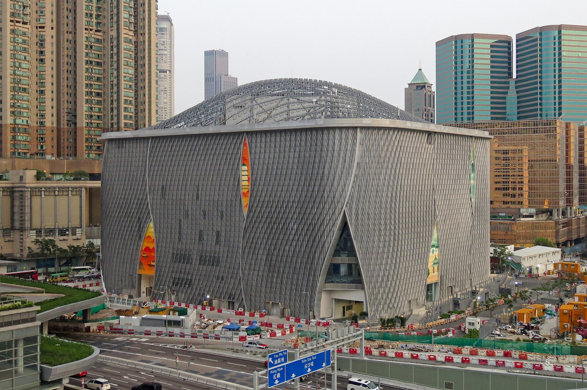
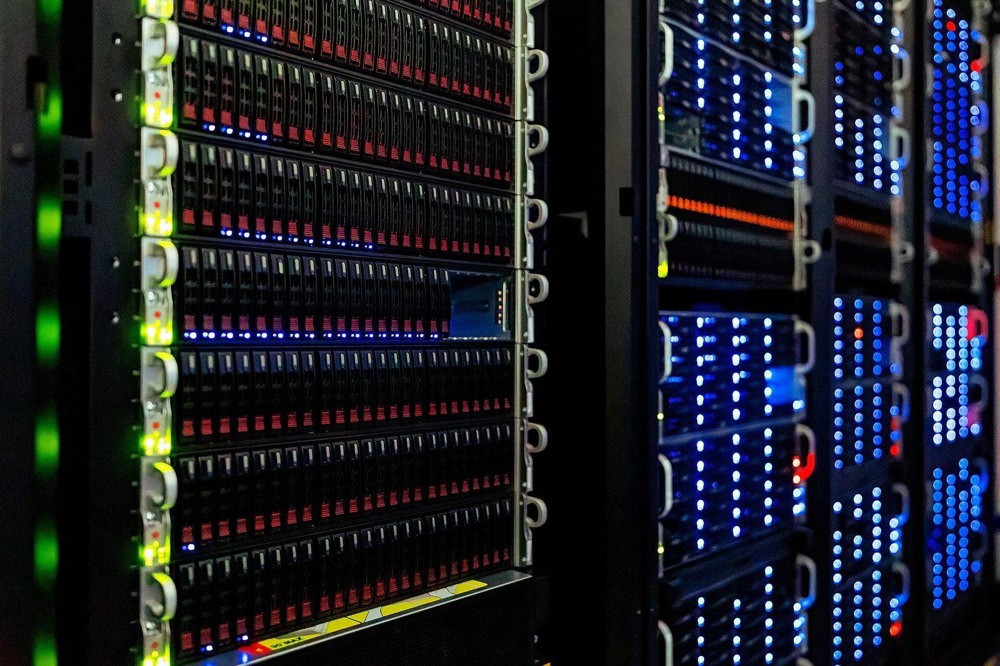

By industry 按行業
Select a sector to see the environments we serve and the product series we deploy there.
Government & Public Sector政府及公共機構
Standards-driven backbones for civic landmarks, statutory bodies and public services — LSZH-compliant to HK Fire Code, specified to ISO/IEC 11801 and delivered through approved contractors.
Typical environments: Civic campuses, cultural districts, statutory authorities, public utilities
What we deploy here

Data Centers數據中心
High-density fiber for hyperscale, colocation and enterprise halls — pre-terminated MPO trunks for rapid deployment, 400G/800G-ready platforms, and intelligent panels for auditable port management.
Typical environments: Exchange-grade facilities, MTDC and colocation, enterprise and AI compute halls
What we deploy here

Financial Services金融服務
Low-latency, fully warranted channels for trading floors, banking networks and regulated environments — with imVision AIM real-time port mapping supporting SOX, FFIEC and SFC audit trails.
Typical environments: International banks, exchanges, asset managers, insurers
What we deploy here
Commercial & Smart Buildings商業及智能樓宇
Future-ready structured cabling for offices and towers — Cat6A backbones for Wi-Fi 6/6E backhaul, PoE++ lighting and IoT, in-building cellular and AV-over-IP.
Typical environments: Grade-A office towers, corporate headquarters, mixed-use developments
What we deploy here
Shopping Malls & Retail商場及零售
Resilient connectivity for POS, high-density guest Wi-Fi and digital signage across multi-floor retail estates — engineered for uptime through peak trading, every day of the year.
Typical environments: Flagship malls, retail chains, retail-entertainment estates
What we deploy here
Hospitality, Stadium & Casino酒店、場館及娛樂
Guest-grade networks for hotels, arenas and entertainment resorts — from back-of-house operations to in-room connectivity and high-density venue Wi-Fi.
Typical environments: Luxury hotels, integrated resorts, stadiums and performance venues
What we deploy here
Healthcare醫療
Reliable, interference-safe cabling for hospitals and clinical systems — LSZH throughout, engineered for medical imaging traffic and round-the-clock clinical uptime.
Typical environments: Public and private hospitals, specialist clinics, laboratories
What we deploy here
Airport, Aviation & Logistics機場航空及物流
Mission-critical links for terminals, cargo handling and cold-chain operations — outdoor-rated and armored fiber, industrial connectivity, and AAHK-aligned specification support.
Typical environments: Airport terminals, air cargo hubs, logistics parks
What we deploy here

Education & Campuses教育及校園
Campus-wide fiber backbones for teaching, research and student life — multi-building OS2 networks with Cat6A to every learning space.
Typical environments: Universities, research institutes, international schools
What we deploy here
Photography: M+, West Kowloon Cultural District © Bkemaoe HOMA (CC BY-SA 4.0) · WKCD panorama © Baycrest (CC BY-SA 2.5) · Xiqu Centre © N509FZ (CC BY-SA 4.0) · HKIA Terminal 1 © Diego Delso (CC BY-SA 3.0) · Central skyline © Jérémy Thomas (CC BY 3.0) · Server halls © NOIRLab/NSF/AURA/T. Slovinský (CC BY 4.0), representative images — all via Wikimedia Commons.